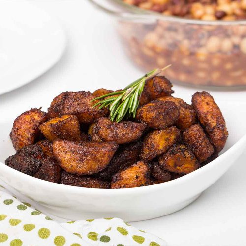

Jollof
Home

Kelewele
A versatile spicy fried plantain dish which be enjoyed as a main dish, side or snack. Guaranteed enjoyment.
Ingredients
- Ripe Plantain
- Vegetable Oil
- Spices
- Groundnuts or Cashew nuts (optional)
Steps
- Prepare stew with fresh tomates, tomato puree, and seasoning.
- Add rice
- Leave to simmer for 20 minutes
- Serve